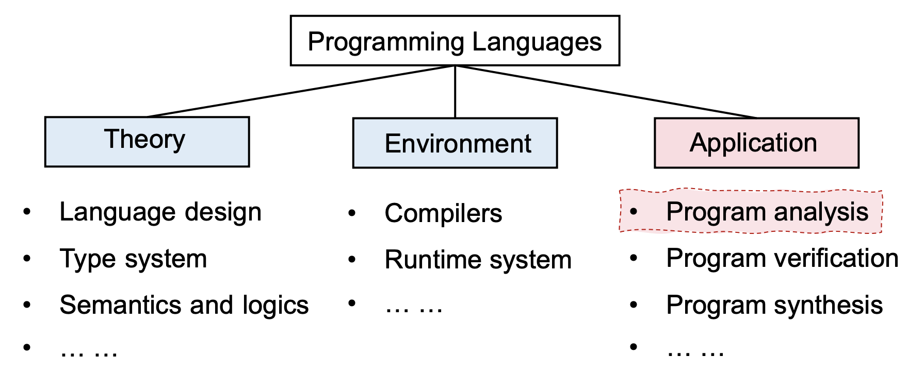
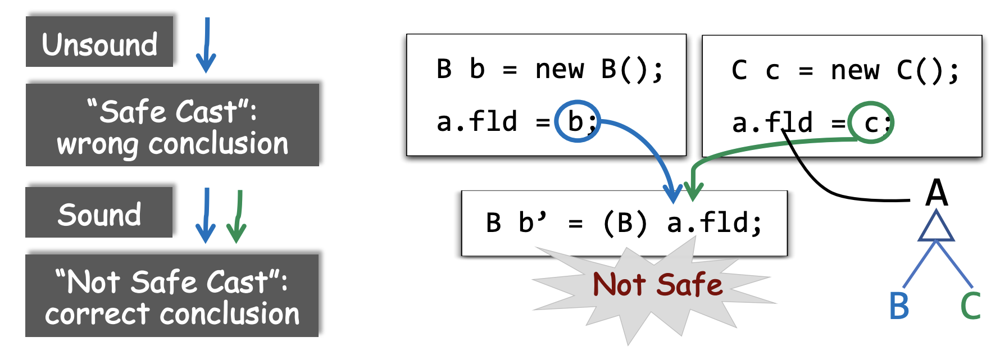
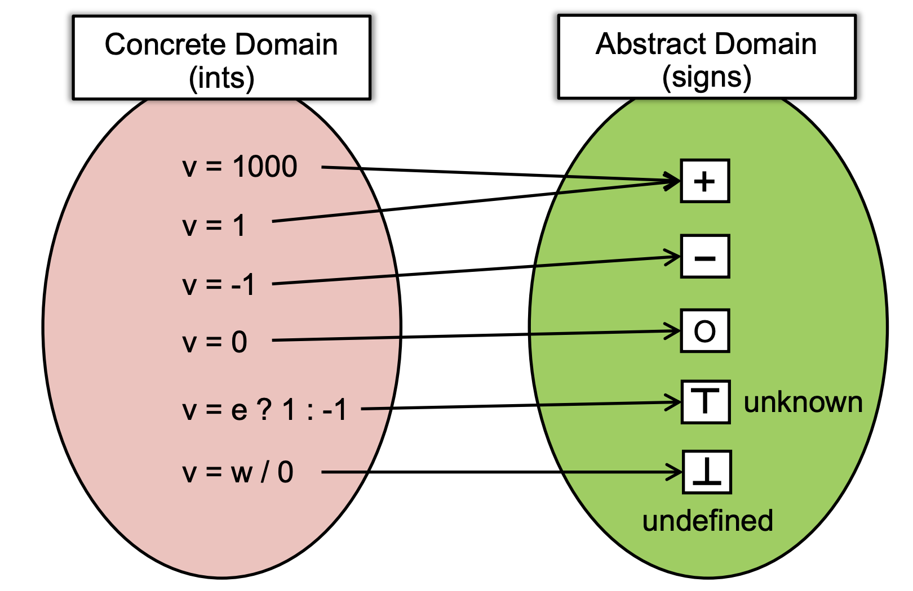
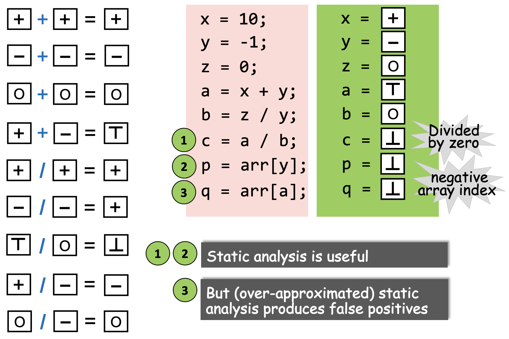
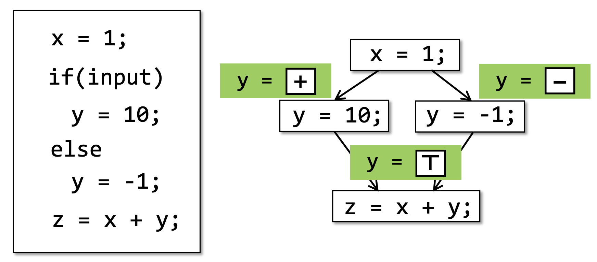

Static Program Analysis (Introduction)
学习资料：
南大软件分析课程视频
https://space.bilibili.com/2919428/video
南大软件分析课件
https://pascal-group.bitbucket.io/courses/program-analysis-2020f/
静态程序分析公开教程
静态程序分析课程笔记
https://anemone.top/categories/Program-Language/
程序语言的知识体系
过去十年语言的核心（language core）变化很少，但是程序变得越来越复杂。
编程语言类型：
命令式编程语言：Java, C, C++，程序按照指令一条一条地执行
函数式编程语言：Haskell，把逻辑包装成函数执行
逻辑式编程语言（声明式语言）：Prolog，通过逻辑与或非进行计算得到最终结果
静态分析的作用
- 程序可靠性（Program Reliability）
空指针引用，内存泄漏等 - 程度安全性（Program Security）
隐私信息泄露，注入攻击等 - 编译优化（Compile Optimization）
Dead code elimination（程序无法执行到的一些代码）, code motion（如循环中重复初始化的变量可以移动到循环外） - 程序理解（Program Understanding）
IDE 调用关系，变量类型指示
什么是静态分析
静态分析是指在程序运行前通过对程序进行分析以得到程序的行为并推断出该程序是否具有某些属性。
- 程序 P 是否存在隐私信息泄露？
- 程序 P 是否有空指针？
- 所有的 cast（类型转换）操作都是安全的吗？
- v1 和 v2 所指向的是同一块内存地址吗？（加锁）
- assert 语句是否会 fail？
- 程序 P 中是否存在死代码？如何优化？
莱斯定理（Rice’s Theorem）
Any non-trial property of the behavior of program in a r.e. language is undecidable.
- r.e. language（recursive enumerable language，递归可枚举语言） = Turing-recognizable language（图灵可识别语言）。一个语言是递归可枚举的语言，当且仅当存在一个图灵机，该图灵机仅接收该语言中的字符串（也就是说对于不在该语言中的字符串，该图灵机可以拒绝或者永不停机）。现有的大部分语言如 Java、C 等都是递归可枚举语言。
- 非平凡性质（non-trial）：一种属性满足部分递归可枚举语言，而在另一部分中不满足。对应的，平凡性质是指一种属性对所有的递归可枚举语言都满足或者都不满足。简单理解为上节中静态分析关注的一些问题都是非平凡性质。
- 不可判定的（undecidable）：不可判定是指某个问题无法得到准确的 Yes or No 的答案。
莱斯定理指出，递归可枚举语言的所有非平凡性质都是不可判定的。
在静态分析领域中，莱斯定理可理解为不存在一个完美的（Perfect）静态分析（既 sound 又 complete 的静态分析）能够准确判断一个程序 P 是否存在一些 non-trial 的属性（如是否存在内存泄漏）。但是可以存在一个 Useful 的静态分析。
https://blog.linyinfeng.com/posts/rices-theorem/
Sound & Complete

🌰 假设程序 P 存在真实的 10 个内存泄漏，Complete 检测到其中的 6 个，而 Sound 检测到 16个（包含真实的 10个）。
| Complete | Under-approximate（欠拟合） | false negative（存在漏报） |
|---|---|---|
| Sound | Over-approximate（过拟合） | false positive（存在误报） |
Useful static analysis
Compromise soundness -> completeness（false negatives，存在漏报）
Compromise completeness -> soundness（false positives，存在误报）
程序分析中绝大部分选择 soundness 的分析（Sound but not fully-precise static analysis），即接受误报；Soundness 对于编译优化、程序验证等一类问题是非常重要的。
🌰 Safe Cast
静态分析是在确保 soundness 的前提下，在精度（precision）和速度（speed）之间做一个平衡。
🌰 if-else

静态分析的技术要点：
- Abstraction
- Over-approximation
- Transfer functions
- Control flows
静态分析示例
分析程序 P 中所有变量的符号（﹢, ﹣, 0）
Abstraction
Unknown：未知，既可能整也可能负也可能为 0
undefined：错误
Over-approximation: Transfer Functions
在静态分析中，Transfer functions 定义了每条程序语句在抽象值上进行计算的规则。
Transfer functions 根据程序分析的目标和程序中每条语句的语义进行构建。
Over-approximation: Control Flows
在实践中我们不可能枚举出所有的路径，因此程序分支的汇聚点需要进行 merge。